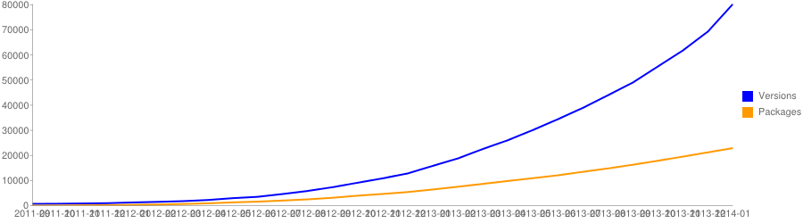

Open Source,
PHP, & PIE
Presented by Larry Garfield (@Crell)
@Crell
- Senior Architect, Palantir.net
- Drupal 8 Web Services Lead
- Drupal Representative, PHP-FIG
- Advisor, Drupal Association
- General busybody
Pollution

We have too much code
in the world
No Silver Bullet
1986

The most radical possible solution for constructing software is not to construct it at all.
— "No Silver Bullet", 1986.
Commercial Off The Shelf (COTS)
The best way to attack the essence of building
software is not to build it at all.
— "'No Silver Bullet', Refired", 1995.
Hey, look, Open Source!

The way to be more productive is to write less code
The way to be more productive is to reuse more code
If a software engineer, a potential consumer of standardized software components, perceives it to be more expensive to find a component that meets his needs, and so verify, than to write one anew, a new, duplicative component will be written. Notice we said perceives above. It doesn't matter what the true cost of reconstruction is.
— Van Snyder, JPL
as quoted in "'No Silver Bullet', Refired", 1995.
Sharing must be easy or it won't happen
Sharing is how Open Source works
Sucking at sharing is how
Open Source dies
The olden days
PEAR

- PHP Extension and Application Repository
- Founded 2000 on the "new" PHP 4
- Required root to use properly (WTF?)
- Complex process for adding packages
- Easy to get wrong
Why we can't have nice things
- Where do I find code?
- PEAR and, um, blogs?
- How do I get code?
- Paste into your repository (or have root)
- How do I load your code?
- Manual includes
- How do I load everyone's code?
- Lots of manual includes
- Name clashes?
- YourProject_Before_Every_Single_Function()
- How can I collaborate on code?
- Sourceforge?
- Can I exchange code?
- LOLz
PHP sucked at sharing
Result
This is my island
There are many like it, but this one is mine
2% of the web cares

3% of the web cares

18% of the web cares

Who cares?
This was the best we could do
NIH is normal
80% of the web cares
Source: W3TechsThe average PHP programmer has written
2.5 frameworks in his career.
— Urban legend statistics
You're not a real PHP developer until
you've written your own CMS.
Sharing is how Open Source works
Sucking at sharing is how
Open Source dies
That was then
PHP is 18 years old
and is finally growing up
Step 0
Class autoloading
PHP 5.0, 2004
First version
function __autoload($class) {
$file = some_logic($class);
include $file;
}Useful version
spl_autoload_register('myproject_autoloader');
function myproject_autoloader($class) {
$file = some_logic($class);
include $file;
}If only I my web host offered PHP 5
— Every PHP developer circa 2007
I can't use PHP 5, no hosts support it.
—Developers
I can't upgrade to PHP 5, no projects require it.
—Hosts
We can't drop support for PHP 4, all the hosts still use it.
—PHP Internals
We can't be the first to use PHP 5, we'll lose our users.
—PHP projects

5 July 2007


We've decided that we will all be first.
- 5 July 2007: 6 projects
- One month later:
- 100 projects
- 200 hosts
- 13 July 2007: PHP 4 EOL announced
Epic. Win.
Why we can't have nice things
- Where do I find code?
- PEAR and, um, blogs?
- How do I get code?
- Paste into your repository (or have root)
- How do I load your code?
- Autloading
- How do I load everyone's code?
- Lots of manual includes
- Name clashes?
- YourProject_Before_Every_Single_Function()
- How can I collaborate on code?
- Sourceforge?
- Can I exchange code?
- LOLz
Step 1
GitHub
2008

Build software better, together

Better than Sourceforge et al by a wide margin.
2013: PHP leads GitHub
Why we can't have nice things
- Where do I find code?
- PEAR and, um, blogs?
- How do I get code?
- Paste into your repository (or have root)
- How do I load your code?
- Autloading
- How do I load everyone's code?
- Lots of manual includes
- Name clashes?
- YourProject_Before_Every_Single_Function()
- How can I collaborate on code?
- GitHub
- Can I exchange code?
- LOLz
Step 2
Namespaces
PHP 5.3, June 2009
Before
class Zend_Form {}
class Application_Form_Guestbook extends Zend_Form {}
class sfForm() {}
Oh PEAR...
class Structures_DataGrid_DataSource_CSV {}
class Structures_DataGrid_DataSource_CSV_Memory
extends Structures_DataGrid_DataSource_CSV {}
After
namespace Zend\Form;
class Factory{}
namespace Zend\Form;
use Zend\Captcha;
$factory = new Factory();
$captcha = new Captcha();
namespace Zend\Form;
use Zend\Captcha;
use Guzzle\Http\Client;
$factory = new Factory();
$captcha = new Captcha();
$guzzle = new Client();
Why we can't have nice things
- Where do I find code?
- PEAR and, um, blogs?
- How do I get code?
- Paste into your repository (or have root)
- How do I load your code?
- Autloading
- How do I load everyone's code?
- Lots of manual includes
- Name clashes?
- Namespaces
- How can I collaborate on code?
- GitHub
- Can I exchange code?
- LOLz
Step 3
The PHP Standards Group
php|tek, May 2009
We're going to have these namespace things,
let's use them the same way for a change!

(Smoke not guaranteed)
PSR-0
- One autoloading standard/convention
- Java-inspired
- PEAR-inspired
- Rudimentary, but enough
PSR-0
<vendor>\Package\Whatever
new \Some\Class\Name_Here();include_once $some_root . '/Some/Class/Name/Here.php';
new Guzzle\Http\Client();
// require('/some/root/path/Guzzle/Http/Client.php');
Worst
Launch
Ever
Thrown off lists.php.net, moved to Google Groups
Admitted a few new projects
Slept through 2010
Debated a lot in 2011
Why we can't have nice things
- Where do I find code?
- PEAR and, um, blogs?
- How do I get code?
- Paste into your repository (or have root)
- How do I load your code?
- Autloading
- How do I load everyone's code?
- PSR-0
- Name clashes?
- Namespaces
- How can I collaborate on code?
- GitHub
- Can I exchange code?
- LOLz
Step 4
Composer
2011/2012

Symfony 2.0
- Initial alpha, Symfony Live Paris, February 2010
- PHPBB: We're rebuilding on it!
- Symfony2 uses 3rd party libs (Doctrine, Monolog)
Dependency Hell
We need a dependency system!
It's dumb to make it Symfony specific
—Jordi Boggiano
April 2011
Nils Aderman (PHPBB): libzypp -> PHP
Jordi Boggiano (Monolog): Packagist, front-end for PEAR
With their powers combined...
Composer is a tool for dependency management in PHP. It allows you to declare the dependent libraries your project needs and it will install them in your project for you.
Uhh, what?
- No more Copy/Paste of libraries
- Resolves dependencies
- Each project defines its own requirements
- Performs build tasks
September 2011
I'd say until early 2012 it was pretty unusable, yet people used it. I guess that's how badly it was needed.
— Jordi Boggiano
Symfony 2.1
September 2012
Composer from the ground up
Package count
January 2014: 22,000 packages
(Not just Symfony!)
Get Composer
# Quick-n-easy:
$ curl -sS https://getcomposer.org/installer | php
# Global
$ curl -sS https://getcomposer.org/installer | php -- --install-dir=bin
composer.json
Base manifest file for your project
{
"name": "crell/myapp",
"description": "This app is amazing.",
"require": {
"guzzle/guzzle": "3.4.*"
},
"autoload": {
"psr-0": {
"MyName\\MyPackage": "src/"
}
}
}composer install
Installs all dependencies for your project
$ composer.phar install
Loading composer repositories with package information
Installing dependencies (including require-dev)
- Installing symfony/event-dispatcher (v2.3.1)
Downloading: 100%
- Installing guzzle/guzzle (v3.4.3)
Downloading: 100%
symfony/event-dispatcher suggests installing symfony/dependency-injection ()
symfony/event-dispatcher suggests installing symfony/http-kernel ()
Writing lock file
Generating autoload files
index.php
use Guzzle\Http\Client;
require_once __DIR__ . '/vendor/autoload.php';
// Every class is now yours to command!
// Autoload on demand! Your work: zero.
$client = new Client('https://api.github.com');
$request = $client->get('/user')->setAuth('user', 'pass');
$response = $request->send();
echo $response->getBody();
Why we can't have nice things
- Where do I find code?
- Packagist.org
- How do I get code?
- Composer
- How do I load your code?
- Autloading
- How do I load everyone's code?
- PSR-0
- Name clashes?
- Namespaces
- How can I collaborate on code?
- GitHub
- Can I exchange code?
- LOLz
Step 5
Common interfaces
2012-Present
PHP-FIG
The organization formerly known as the
PHP Standards Group and now represented by
this web site
Became useful in 2012
Renamed to PHP Framework Interoperability Group,
June 2012
New (first?) actual process definition, July 2013
PSR-3
Standard logger interface
Inspired by Monolog ... and Drupal
PSR-3
namespace Psr\Log;
interface LoggerInterface {
public function log($level, $message, array $context = array());
public function emergency($message, array $context = array());
public function alert($message, array $context = array());
public function critical($message, array $context = array());
public function error($message, array $context = array());
public function warning($message, array $context = array());
public function notice($message, array $context = array());
public function info($message, array $context = array());
public function debug($message, array $context = array());
}
PSR-6 (Review)
Unified caching interface
- Cache "Pools" and "Items"
- Designed for extensibility
- Multi-get/set, expiration
- Stampede protection?
Editor: Yours Truly :-)
PSR-6 (Review)
function get_widget_list() {
$pool = get_cache_pool('widgets');
$item = $pool->getItem('widget_list');
if (!$item->isHit()) {
$value = compute_expensive_widget_list();
$item->set($value);
$pool->save($item);
}
return $item->get();
}
PSR-7 (Review)
HTTP Messages
- Think Symfony\HttpFoundation Jr.
- Request/Response only
- Works for clients and servers
Editor: Michael Dowling, Guzzle
PSR-7 (Review)
namespace Psr\Http\Message;
interface MessageInterface {
public function getProtocolVersion();
public function getBody();
public function setBody(StreamInterface $body = null);
public function getHeaders();
public function hasHeader($header);
public function getHeader($header);
public function getHeaderAsArray($header);
public function setHeader($header, $value);
public function setHeaders(array $headers);
public function addHeader($header, $value);
public function addHeaders(array $headers);
public function removeHeader($header);
}
PSR-7 (Review)
namespace Psr\Http\Message;
interface RequestInterface extends MessageInterface {
public function getMethod();
public function setMethod($method);
public function getUrl();
public function setUrl($url);
}
interface ResponseInterface extends MessageInterface {
public function getStatusCode();
public function setStatusCode($code);
public function getReasonPhrase();
public function setReasonPhrase($phrase);
}
Yes, we can have nice things
- Where do I find code?
- Packagist.org
- How do I get code?
- Composer
- How do I load your code?
- Autloading
- How do I load everyone's code?
- PSR-0
- Name clashes?
- Namespaces
- How can I collaborate on code?
- GitHub
- Can I exchange code?
- PHP-FIG standard interfaces
The way to be more productive is to write less code
The way to be more productive is to reuse more code
The way to be more productive is to share more code

The mission...
Drupal needs to evolve, and quickly, from a first-class web CMS into a first-class REST server that includes a first-class web CMS.
Hey, look, a first-class REST server!

Drupal 8
- Symfony2 (HttpFoundation, HttpKernel, DependencyInjection, EventDispatcher, Routing, Serializer, Validator, Yaml)
- Symfony CMF
- Zend Feed
- Doctrine Annotations
- Guzzle
- EasyRDF
- Assetic
- Twig
- PHPUnit
Drupal in Symfony
- Flash Messages
- BinaryFileResponse
- Context support in Validator/Serializer
- Routing improvements
- Symfony CMF Router
- Many other odds and ends
More collaboration
- Doctrine Annotations Performance
- Guzzle restructuring
- Zend Feed dependencies
Symfony and Zend
Zend ProxyManager in DependencyInjection Component
Great news for Symfony!

The new normal
Given 2 ways to solve a problem,
choose the approach that results in less code
in the world
Not Invented Here
Proudly Invented Elsewhere

We are no longer islands


Our world is changing fast.
Let's go somewhere together.
Larry Garfield
Senior Architect, Palantir.net
Making the Web a Better Place
Keep tabs on our work at @Palantir
Want to hear about what we're doing?